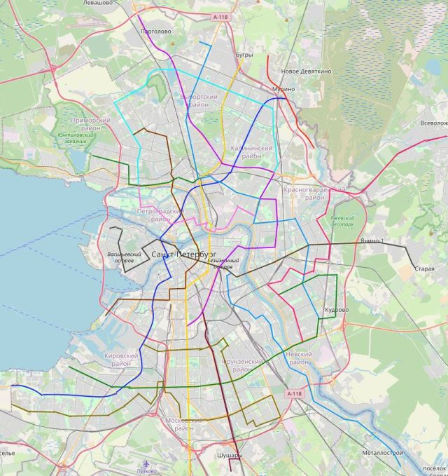

Навигация: Главная О нашем издательстве Главная О нашем издательстве
|
Петербург. В ходе транспортной реформы троллейбусы заменят метро.
22 апреля 2021 В Санкт-Петербурге полным ходом идёт обсуждение транспортной реформы. В ходе её обсуждаются проблемы со строительством метро и об улучшении обслуживания пассажиров в районах, куда метро доберётся не скоро. Как известно, в Петербурге с метро всё очень плохо. Городу не хватает средств на реализацию метро, а его строительство идёт очень медленно, из-за чего жители в новых районах города страдают от плохой транспортной доступности, и пробок. Одним из решением данной проблемы - станет новая троллейбусная сеть в городе - она будет перестроена "ветками", похожими на линии метрополитена. Так же, на троллейбусной сети станет возможна бесплатная пересадка - для этого будут установлены новые "умные" валидаторы, записывающие на БСК тип транспортного средства, на котором проехал пассажир. Как сообщает Андрей Пахомов, глава по транспортным развязкам в Санкт-Петербурге - "Запустить троллейбусную сеть недолго, ибо у нас давно есть троллейбусы с увеличенным автономным ходом. Более того, мы можем закупить их ещё, построить так называемые "зарядные станции", и наслаждаться весьма технологичным видом транспорта". Стиомость проекта пока не называется, однако согласно предварительным расчётам нашей газеты - строительство новой троллейбусной сети обойдётся примерно $1'000'000. Такова цена закупки новых троллейбусов и строительства зарядных станций, обладающих высокой мощностью. "В городе пару лет назад в роли экспериментального проекта был продлён до Площади Восстания 16 троллейбус" - сообщает Андрей. "Троллейбус показал себя очень хорошо, и по сути представляет собой альтернативой метро на Полюстрово, Пискарёвку, и Ручьи - где метро не будет ещё очень долго. Пусть он стоит в пробках, но маршрут очень удачный". Так же редакции "троллейбуса" удалось ознакомиться с картой будущих троллейбусных линий.  Как сообщает комитет по транспортным развязкам, строительство троллейбусной сети начнётся уже в 2023 году, и закончится в 2025. |